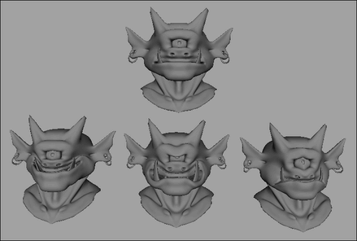

您可以更改基础对象的拓扑，然后将这些更改传播到与该基础对象关联的所有目标对象。
传播基础对象拓扑更改
- 对基础对象的几何体进行拓扑更改（例如，将其变形）。
注：
- 必须使用在其历史中创建节点的工具来变形基础对象。例如，仅移动组件（如顶点、面和边）不会生成历史节点，除非随后应用“编辑网格 > 变换”(Edit Mesh > Transform)。
- 基础对象的几何体已使用历史进行变形后，请勿删除历史。必须保留历史，以便基础对象将其变形正确投影到目标对象。
- 选定基础对象后，选择 > 将拓扑烘焙到目标(Bake Topology To Targets)。
相关目标对象的拓扑将更新以反映其基础对象的拓扑，并烘焙基础对象的建模历史。
